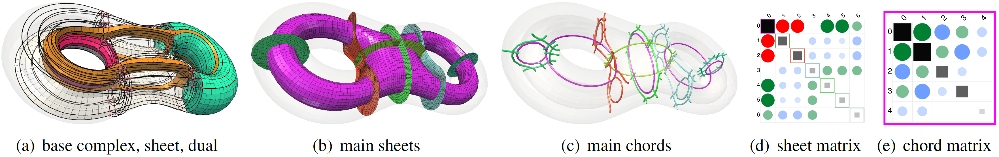
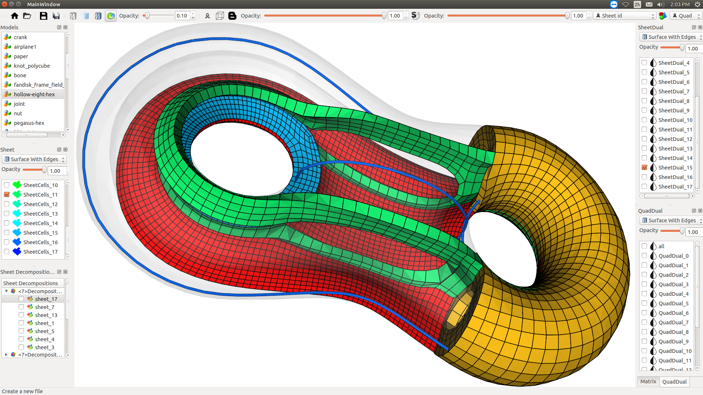
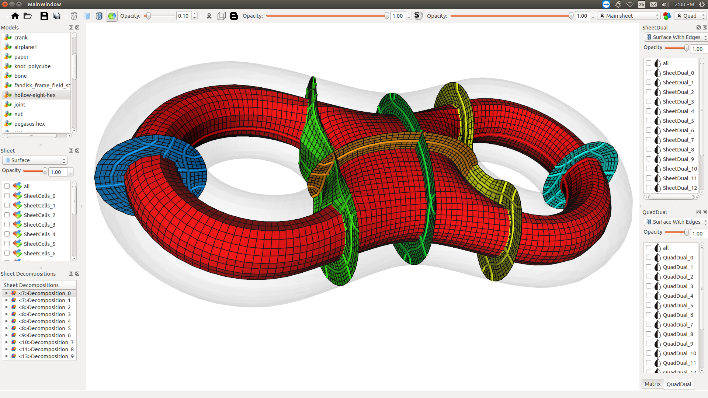
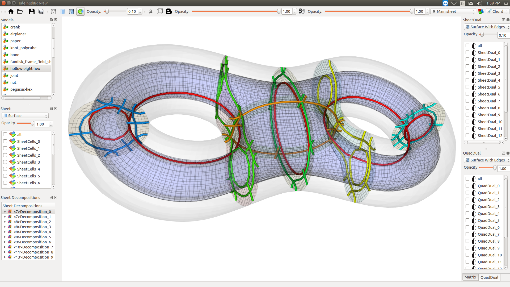

IEEE VIS 2018
Hexahedral Mesh Structure Visualization and Evaluation

Multi-level view of the structure for the joint model.
Abstract
Understanding hexahedral (hex-) mesh structures is important for a number of hex-mesh generation and optimization tasks. However, due to various configurations of the singularities in a valid pure hex-mesh, the structure (or base complex) of the mesh can be arbitrarily complex. In this work, we present a first and effective method to help meshing practitioners understand the possible configurations in a valid 3D base complex for the characterization of their complexity. In particular, we propose a strategy to decompose the complex hex-mesh structure into multi-level sub-structures so that they can be studied separately, from which we identify a small set of the sub-structures that can most efficiently represent the whole mesh structure. Furthermore, from this set of sub-structures, we attempt to define the first metric for the quantification of the complexity of hex-mesh structure. To aid the exploration of the extracted multi-level structure information, we devise a visual exploration system coupled with a matrix view to help alleviate the common challenge of 3D data exploration (e.g., clutter and occlusion). We have applied our tool and metric to a large number of hex-meshes generated with different approaches to reveal different characteristics of these methods in terms of the mesh structures they can produce. We also use our metric to assess the existing structure simplification techniques in terms of their effectiveness.
We extract all base complex sheets (green and brown in (a) are two sheets) from the base complex (red dots and thick black lines in (a)) of a hexahedral (hex-) mesh, then select a set of sheets (b) that can most efficiently represent the base complex. Similarly, for each sheet, a dual surface of it could be further decomposed to a set of chords (c). We calculate the complexity of the structure using an enhanced adjacency matrix, where each diagonal entry (gray square) shows the complexity of the corresponding sheet, and the entry (i, j) shows the relations between sheet i and sheet j. From this matrix representation, the complexity of the base complex can be computed. The above procedure effectively helps us evaluate the structure configuration of a hex-mesh.

GUI-1.

GUI-2.

GUI-3.